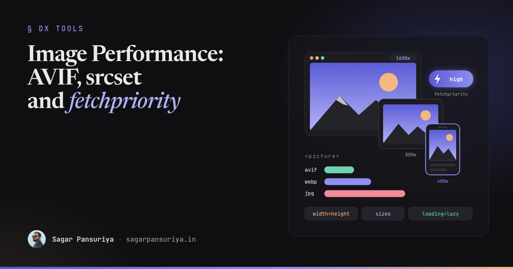
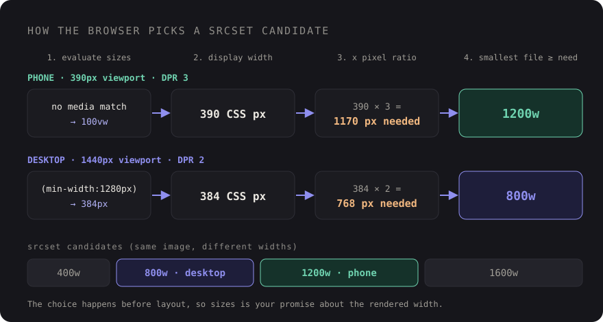

Image Performance in 2026: AVIF, srcset, sizes and fetchpriority Done Right


You've probably seen this one. A marketing page gets a beautiful new hero photo, straight out of the designer's export folder: 4000 pixels wide, 3 MB, JPEG. It looks perfect on the office monitor. On a phone over a patchy connection, the headline sits next to an empty grey box for three seconds, then the whole layout jumps when the image finally arrives.
Images are usually the heaviest thing on a page, and the hero image is very often the Largest Contentful
Paint element. The good news is that the fixes are mostly HTML attributes. No framework, no build step
required. The bad news is that each attribute is easy to get slightly wrong, and a slightly wrong
sizes value or a stray loading="lazy" can quietly undo everything else.
This is the checklist I use when reviewing image markup, in the order it matters, with Laravel and WordPress notes at the end.
Formats: AVIF first, WebP second, JPEG as the safety net
AVIF and WebP both compress photos far better than JPEG at similar visual quality, and every current major browser supports both. AVIF usually wins on file size, especially for photos with smooth gradients. WebP encodes faster and is a solid middle ground. Keep a JPEG or PNG fallback for older browsers and for anything that consumes your images outside a browser, like email clients or social previews.
The <picture> element lets the browser pick the first format it understands:
<picture>
<source type="image/avif" srcset="/img/hero-800.avif 800w, /img/hero-1600.avif 1600w" sizes="100vw">
<source type="image/webp" srcset="/img/hero-800.webp 800w, /img/hero-1600.webp 1600w" sizes="100vw">
<img src="/img/hero-1600.jpg"
srcset="/img/hero-800.jpg 800w, /img/hero-1600.jpg 1600w"
sizes="100vw"
width="1600" height="900"
alt="Team reviewing a design system on a large screen">
</picture>Two things people miss. First, the <img> is not optional: it's the element that
actually renders, and it carries the alt, width, height and
loading attributes. The <source> elements only offer alternative files. Second,
order matters. The browser takes the first <source> whose type it supports, so put the
smallest format first.
For icons, logos and illustrations, skip all of this and use SVG. A 2 KB SVG beats any raster format and stays sharp at every size.
srcset and sizes, done correctly
With width descriptors (800w, 1600w) you tell the browser how wide each file
is. With sizes you tell it how wide the image will be displayed. The browser
combines the two with the screen's pixel density and picks the smallest file that's still sharp.

The key point is that the browser has to make this choice before it has laid out your page, which is
why it can't just measure the element. sizes is your promise about the layout. If you
leave it out, it defaults to 100vw, and a thumbnail in a four-column grid will download a
file sized for the full viewport.
Write sizes to mirror your CSS breakpoints. For a card grid that's one column on phones,
two on tablets and a fixed 1200 px container with three columns on desktop:
<img src="/img/card-600.jpg"
srcset="/img/card-400.jpg 400w, /img/card-600.jpg 600w, /img/card-900.jpg 900w, /img/card-1200.jpg 1200w"
sizes="(min-width: 1280px) 384px, (min-width: 768px) 50vw, 100vw"
width="1200" height="800"
loading="lazy" decoding="async"
alt="…">Media conditions are checked in order and the first match wins, so list them from widest to narrowest. It doesn't need to be pixel perfect. Being within 10 to 20 percent of the real width is plenty, because the browser snaps to the next candidate anyway.
For candidate widths, I usually generate four or five steps between roughly 400 and 2000 pixels. More candidates means better matches but more files to generate and cache. Beyond about 2x the largest display width, extra pixels are just bytes.
Use density descriptors (1x, 2x) only for images with a fixed CSS size, like
an avatar that's always 48 px. For anything fluid, use width descriptors and sizes.
width and height: the cheapest CLS fix there is
Always put width and height on the <img>. Modern browsers
use them to compute an aspect ratio and reserve the right amount of space before a single byte of the
image arrives. That's what stops the layout jump from the opening example.
The values don't lock the displayed size. Keep your responsive CSS, and it just works:
img {
max-width: 100%;
height: auto;
}They should match the intrinsic aspect ratio of the file (any candidate from the srcset
works, since they share a ratio). If an art-directed <source> uses a different crop,
you can put width and height on that <source> too. If
you'd rather control the box from CSS, aspect-ratio combined with
object-fit: cover does the same job.
Loading priority: lazy for most, eager and high for one
This is where good intentions backfire most often. Here's the rule:
| Image | loading | fetchpriority | decoding |
|---|---|---|---|
| The LCP image (hero, main product photo) | omit (eager) | high | omit |
| Other images visible on first load | omit (eager) | omit | omit or async |
| Everything below the fold | lazy | omit | async |
| Carousel slides 2 and up | lazy | low (optional) | async |
Never lazy-load the LCP image. Lazy images wait until the browser knows where they sit
in the layout, which delays the exact image your LCP score depends on. Blanket
loading="lazy" on every image, often added by a well-meaning CMS or a component default,
is one of the most common LCP regressions I see in audits.
fetchpriority="high" is a hint that moves the hero ahead of other images in the download
queue. Use it on one image, maybe two. If everything is high priority, nothing is.
decoding="async" lets the browser decode an image off the critical path. It's a small
win for below-the-fold images and generally harmless, but don't expect miracles from it.
When the hero is a CSS background
The preload scanner can't see images referenced only in CSS, so a background-image hero is discovered
late. The best fix is to turn it into a real <img> with object-fit:
cover. If you can't, preload it, and use imagesrcset and imagesizes so
you don't preload the wrong size:
<link rel="preload" as="image" fetchpriority="high"
imagesrcset="/img/hero-800.avif 800w, /img/hero-1600.avif 1600w"
imagesizes="100vw" type="image/avif">Let a service generate the variants
Nobody should be exporting five widths times three formats by hand. You have two sensible options.
- An image CDN or transform service. You upload one high-quality original and request
variants by URL parameters, typically width, format and quality. Many can also negotiate the format
from the browser's
Acceptheader, so a single URL serves AVIF to browsers that support it. Check how your provider handles caching and theVaryheader before relying on that. - Generate at upload time. Resize and encode when the file is uploaded, store the variants, and serve them as static files. More storage, zero runtime cost, no third party.
Either way, keep the original. Formats improve, and you'll want to re-encode from the source rather than from an already-compressed copy.
In Laravel: one Blade component owns the markup
The single most useful thing you can do in a Laravel app is to stop writing image markup by hand. Put it in one component so the rules live in one place:
{{-- resources/views/components/picture.blade.php --}}
@props([
'path', // original, e.g. 'products/walnut-desk.jpg'
'alt',
'width',
'height',
'sizes' => '100vw',
'widths' => [400, 800, 1200, 1600],
'priority' => false, // true only for the LCP image
])
@php
$set = fn (string $format) => collect($widths)
->map(fn ($w) => image_url($path, $w, $format) . " {$w}w")
->implode(', ');
@endphp
<picture>
<source type="image/avif" srcset="{{ $set('avif') }}" sizes="{{ $sizes }}">
<source type="image/webp" srcset="{{ $set('webp') }}" sizes="{{ $sizes }}">
<img src="{{ image_url($path, 1200, 'jpg') }}"
srcset="{{ $set('jpg') }}" sizes="{{ $sizes }}"
width="{{ $width }}" height="{{ $height }}" alt="{{ $alt }}"
@if ($priority) fetchpriority="high" @else loading="lazy" decoding="async" @endif
{{ $attributes }}>
</picture>Here image_url() is your own small helper that builds a URL for your CDN or for variants
you generated at upload time. Swapping providers later means changing one function. Usage stays tidy:
<x-picture path="{{ $product->image }}" alt="{{ $product->name }}"
width="1600" height="1200" priority
sizes="(min-width: 1024px) 50vw, 100vw" />If you already use a media library package, check whether it can generate responsive variants and
render srcset for you before building your own. Store each image's intrinsic width and
height when it's uploaded, so the component always has them.
In WordPress: mostly configure, don't rebuild
WordPress already does a lot. wp_get_attachment_image() outputs srcset,
sizes, width and height from your registered image sizes, adds
loading="lazy", and recent versions try to detect the likely LCP image and give it
fetchpriority="high" instead. Use it, and don't hand-write <img> tags
in your theme.
Where it guesses wrong, override per call:
echo wp_get_attachment_image($hero_id, 'full', false, [
'loading' => false, // drop the lazy attribute
'fetchpriority' => 'high',
'sizes' => '100vw',
]);Register image sizes that match your real layout widths with add_image_size(), and set a
correct sizes per template rather than trusting the default, which assumes the image
renders at its full width. To have WordPress produce modern formats for new uploads, the
image_editor_output_format filter maps an uploaded MIME type to an output format, as long as
your server's image library supports it:
add_filter('image_editor_output_format', function (array $formats) {
$formats['image/jpeg'] = 'image/webp';
return $formats;
});If you're on Sage, wrap wp_get_attachment_image() in a Blade component (see
Blade components in Sage) so the priority
rules live in one place, the same way as in Laravel.
The checklist
- Photos ship as AVIF or WebP with a JPEG fallback in
<picture>. Icons and logos are SVG. - Every fluid image has width-descriptor
srcsetand asizesthat mirrors the CSS. - Every
<img>haswidthandheight, plusheight: autoin CSS. - The LCP image is eager with
fetchpriority="high". Nothing else is high. - Everything below the fold is
loading="lazy"anddecoding="async". - CSS background heroes become
<img>, or get a responsive preload. - Variants come from a service or upload pipeline, and one component owns the markup.
Then measure it. Check which element is the LCP in DevTools, confirm the file size the browser actually picked on a phone-sized viewport, and add image weight to your performance budget so the next 3 MB hero gets caught in a pull request instead of in production.
Discussion